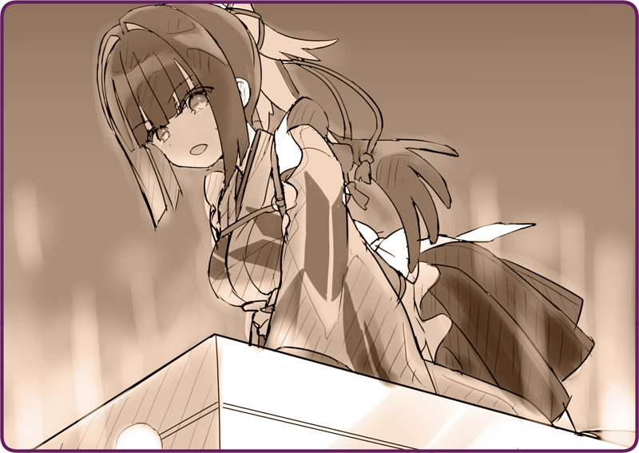

Tôi quay gót, chạy lại chỗ Hình nhân Cơ khí nông nghiệp.
Rosa: “C-Chờ em với…”
Tôi vươn tay ra, kéo cơ thể nhỏ bé của em lên.
Chúng tôi phải chạy khỏi nơi này nhanh nhất có thể.
Rosa: “...... Không được rồi.”
Rosa: “Động cơ không chạy!”
Quả thật, ống khói đã không còn thải khí nữa rồi.
Không thể tin được là cơ quan lý luận lại bị hỏng ngay lúc này…
Tiếng vỗ cánh sặc mùi tai họa kia đang tiến về phía chúng tôi ngày một gần.
Chúng đã dò ra được chúng tôi. Cũng phải thôi, chúng tôi vừa tìm ra “thứ không nên để ai nhìn thấy” cơ mà…
Hồi còn tại ngũ thì mấy thứ Hình nhân Trinh sát kia chỉ là lũ tép riu đối với tôi.
Thế nhưng
Hình nhân Tự hành Karasuba của bây giờ chẳng có gì còn gọi là ‘vũ khí’ cho được.
Nếu buộc phải dùng đến cái gì đó thì vẫn còn Hình nhân Cơ khí nông nghiệp này đây, nhưng ngay từ đầu, tôi đã đánh mất khả năng chỉ huy rồi…
Dù vậy, vẫn phải thử.
Rosa: “Nhưng mà…”
Tôi nhẹ nhàng chạm tay vào bộ khung, rồi nhắm mắt lại để ngăn chặn việc tiếp nhận thông tin qua thị giác, chỉ tập trung vào phần ý thức.
Đồng bộ cơ quan lý luận của nhau. Cộng hưởng ý thức làm một với Hình nhân nọ.

Một cảm giác hệt như lồng ngực bị thiêu đốt.
Rosa: “Chị ra nhiều mồ hôi quá!!”
Nhiệt độ trong cơ thể nhân tạo của tôi đang gia tăng chóng mặt, khiến chất làm mát tuôn ra như suối.
Tôi có thể thấp thoáng thấy nó đang cộng hưởng lại mình.
Nắm bắt lấy âm thanh, rồi khuếch đại nó lên. Sau đó, truyền ý thức của bản thân vào…
Phụt, tiếng của thứ gì đó bị tắc nghẽn vang lên, rồi khói đen bắt đầu phun ra.
Bên dưới cơ thể này, âm thanh truyền động inh ỏi như tiếng sấm rền.
Cả thân người tôi bết bát toàn chất làm mát.
Dù vậy, tôi đã nhập lệnh được rồi. Tôi đã có thể truyền mệnh lệnh vào cơ quan lý luận rồi.
Rosa: “Chị ơi, chúng tới kìa…!”
Tôi nghe rõ tiếng vỗ cánh truy đuổi ngay sát đằng sau.
Khói tuyết bốc lên, gia tốc đã đạt đến mức tối đa. Vận hành được rồi—
Rosa: “Kyaaaaaaa!!!”
Tôi điều khiển cơ thể Hình nhân Cơ khí chạy xé gió.
Đến lúc để ý thì cả bọn đã đứng trên mặt hồ băng tự khi nào.
Nói thế này nghe có vẻ buồn cười, nhưng nếu phó mặc tất cả cho tốc độ thì đến một chiếc xe hơi ọp ẹp cũng hóa xe đua.
Rosa: “Không ổn rồi, chúng vẫn còn đuổi theo!”
Rosa vận hết sức bám chặt lấy người tôi không rời.
Liếc ra sau lưng, tôi thấy những cơ thể nhân tạo dễ khiến người ta liên tưởng tới côn trùng đang đuổi theo cả hai.
Những họng súng kia lại còn tỏa sáng chói mắt.
Rosa: “Óaaaaaaaa!!!”
Nhận định rằng không thể chạy được nữa, tôi bèn cho quay 180 độ.
Được ăn cả ngã về không, phải liều thôi.
Rosa: “Chị định đâm chúng sao?!”
Đôi mắt tôi rực sáng ánh đỏ. Sau khi tôi đưa ra mệnh lệnh cho
Hình nhân Cơ khí nông nghiệp, hai chi trước của nó giang rộng ra.
Một cú va đập mạnh. Những
Hình nhân Cơ khí phe địch không né kịp bị đâm trực diện.
Cứ thế, tôi dồn toàn bộ trọng lượng của
Hình nhân Cơ khí mình đang điều khiển vào hai chi trước, rồi đập mạnh xuống mặt băng.
Rắc, âm thanh nứt vỡ vang động khắp bầu trời lạnh giá.
Vết nứt nhanh chóng lan rộng khắp mặt hồ.
Rosa: “Ơ, dạ?”
Tôi nắm lấy tay cô bé và nhảy khỏi
Hình nhân Cơ khí.
Ngay khi đặt chân lên mặt băng, tôi dồn hết tâm trí chạy khỏi nơi đó.
Một khi băng đã nứt thì nó sẽ vỡ tan rất nhanh.
Tôi và Rosa bán sống bán chết chạy tới bờ hồ bên kia.
Phía đằng sau, một cột nước khổng lồ phun trào.
Hai
Hình nhân Cơ khí trong tích tắc chìm sâu xuống lòng hồ cùng những tảng băng.

 “Nhanh trèo lên!”
“Nhanh trèo lên!”